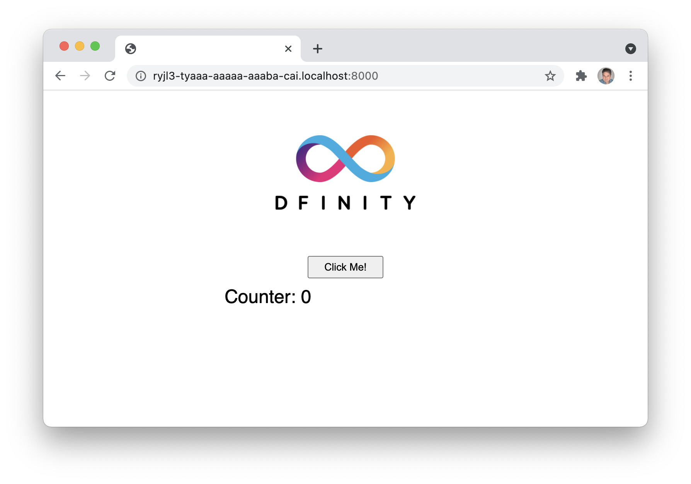
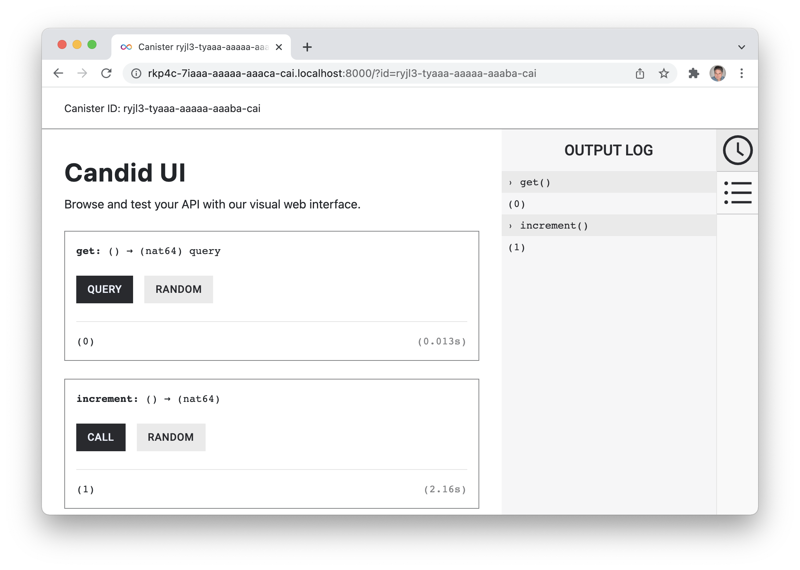

本 CodeLab 展示了如何在创建新的 Rust 项目时基于 DFX 安装的默认 dapp 模板构建简约的 dapp。 dapp 是一个带有计数器的简单网站。 每次按下按钮时，计数器都会增加。
本 CodeLab 涵盖:
- 使用 SDK (DFX) 创建新的容器智能合约
- 使用默认项目作为模板作为新项目的起点
- 为计数器添加后端功能（计数、获取计数和重置计数）
- 在前端实现后端功能
- 在本地部署容器智能合约
- 使用 Candid UI 和命令行使用 DFX 测试后端，并在浏览器中测试前端
前端看起来像这样:

运行此命令以创建项目:
$ dfx new --type=rust minimal_rust_dapp
DFX 将创建一个名为 minimal_rust_dapp 的新目录，在此目录中您将找到默认项目的所有文件，包括前端、后端、配置等。 默认项目无需任何更改即可部署。

src 目录将包含默认的前端和后端代码。
dfx.json 文件包含容器配置。 它定义了容器、容器的源代码所在的位置、容器的类型以及创建项目时使用的 DFX 版本。
第一步，添加一些后端功能。 后端函数位于 src/minimal_rust_dapp/lib.rs Rust 文件中。
不需要默认项目中的现有代码，因此删除了 greet() 函数。
Counter variable
创建了两个函数来使计数器工作：get() 和 increment()。 当前计数器值存储为一个数字。
static mut COUNTER: u64 = 0;
get()
get() 函数返回当前计数器值。
#[ic_cdk_macros::query]
fn get() -> u64 {
unsafe { COUNTER }
}
increment()
increment() 函数递增计数器变量。 当用户点击前端的按钮，或者通过 Candid 接口调用该函数时，会调用该函数。
#[ic_cdk_macros::update]
fn increment() -> u64 {
unsafe {
COUNTER += 1;
COUNTER
}
}
该函数返回递增的计数器变量。
完成的后端文件
main.mo 文件放在一起后看起来像这样:
static mut COUNTER: u64 = 0;
#[ic_cdk_macros::query]
fn get() -> u64 {
unsafe { COUNTER }
}
#[ic_cdk_macros::update]
fn increment() -> u64 {
unsafe {
COUNTER += 1;
COUNTER
}
}
修改后端后，必须修改Candid接口以匹配后端。 Candid 接口位于 src/minimal_rust_dapp/minimal_rust_dapp.did Candid 文件中。
去掉Candid接口文件中已有的代码，替换成如下:
service : {
"get": () -> (nat64) query;
"increment": () -> (nat64);
}
此时可以部署后端并测试其功能。 可以通过不同的方式测试后端，在此步骤中，通过 DFX 调用和使用 Candid 创建的 Web 界面发出请求来测试后端。
部署容器
首先必须部署 dapp，这是在本 CodeLab 本地完成的。 通过运行此命令启动本地网络:
$ dfx start --background
当本地网络启动并运行时，运行以下命令来部署容器：
$ dfx deploy
DFX
DFX 有一个用于容器操作的命令子集，其中一个可以调用在前面的步骤中添加到 lib.rs 文件中的函数。 在以下示例中，初始值为 0。increment 将递增值并返回 1，get 将返回当前值。
命令用法：dfx canister call project function
$ dfx canister call minimal_rust_dapp increment
(1 : Nat)
$ dfx canister call minimal_rust_dapp get
(1 : Nat)
Candid UI
Candid UI 为测试后端提供了一个简单、用户友好的界面。 UI 是自动生成的，容器 ID 可以在 canister_ids.json 文件中找到。
canister_ids.json 文件的 localhost 版本可以在 .dfx/local/canister_ids.json 中找到，URL 是:
http://<candid_canister_id>.localhost:8000/?id=<backend_canister_id>

默认项目有一个带有页面 HTML 的 index.html 文件和一个带有后端功能实现的 index.js 文件。
HTML
对于此 CodeLab，对 index.html 文件的更改很小。 该按钮被保留，显示结果的部分也是如此，只是简化了。
<!doctype html>
<html lang="en">
<head>
<meta charset="UTF-8">
<meta name="viewport" content="width=device-width">
<title>hack</title>
<base href="/">
<link type="text/css" rel="stylesheet" href="main.css" />
</head>
<body>
<img src="logo.png" alt="DFINITY logo" />
<section>
<button id="clickMeBtn">Click Me!</button>
</section>
<section id="counter"></section>
</body>
</html>
Javascript
现有的按钮点击事件监听修改为调用increment()函数，增加页面加载事件监听，通过get()获取计数器的初始值。 后端功能仍然通过 Candid 接口导入。
import { minimaldapp } from "../../declarations/minimal_rust_dapp";
document.addEventListener('DOMContentLoaded', async function () {
const counter = await minimaldapp.get();
document.getElementById("counter").innerText = "Counter: " + counter;
})
document.getElementById("clickMeBtn").addEventListener("click", async () => {
const counter = await minimaldapp.increment();
document.getElementById("counter").innerText = "Counter: " + counter;
});
必须重新部署容器，因为前端已更改，因为后端的部署在步骤中发生了更改。 假设本地网络仍在运行，使用此命令重新部署:
$ dfx deploy
前端的 URL 取决于容器 ID。 如步骤 4 所述，从 canister_IDs.json 文件中获取容器 ID，在本例中为 UI 容器。 URL 将如下所示:
https://<ui_canister_id>.localhost:8000

本 CodeLab 将介绍使用 Motoko 和 HTML/Javascript 在本地创建和部署 dapp 的基本步骤。
有关将 dapp 部署到互联网计算机的信息，请参阅文档 here.